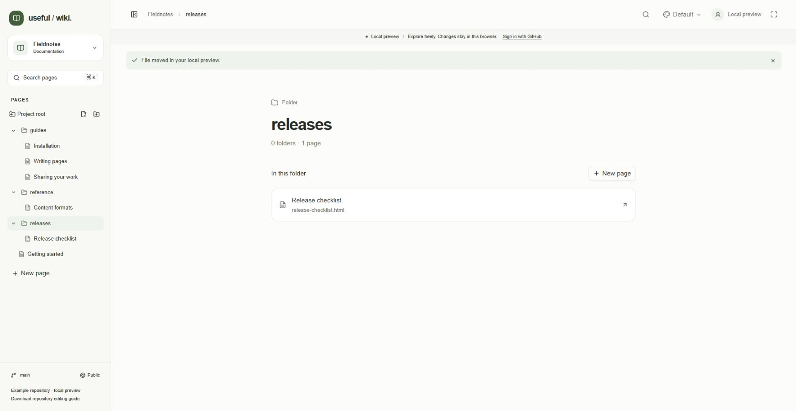
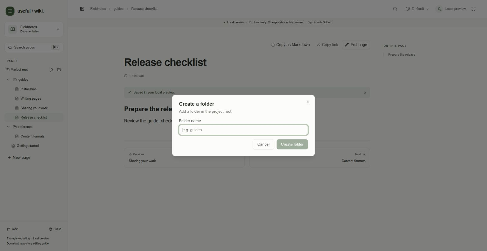
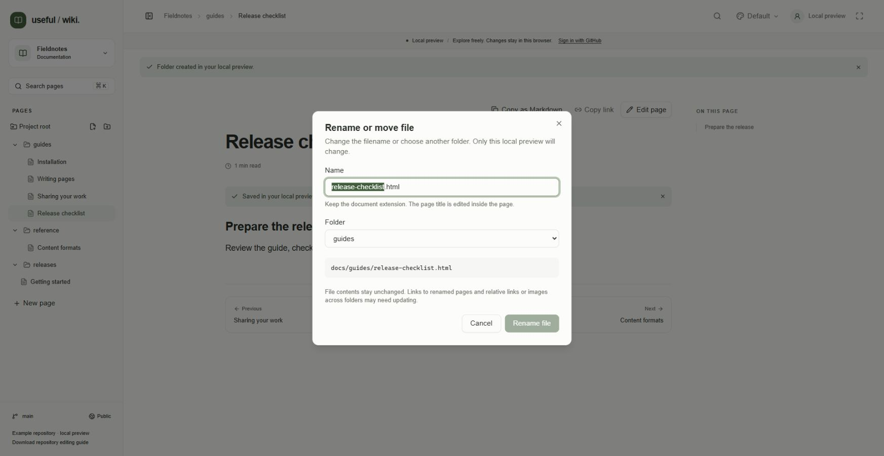
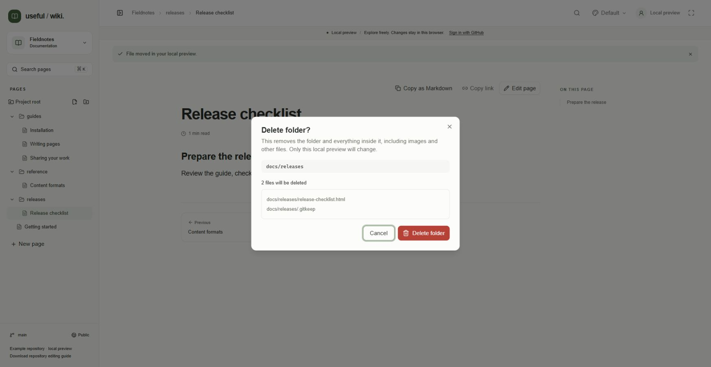

Pages and folders in useful-wiki follow the files in your GitHub repository. This guide covers browsing that structure and organizing the repository. You need repository write access to create, rename, move, or delete files.
Open a project and find Pages in its sidebar. On a small screen, choose Open navigation in the header first.
Choose a page to read it. Hover over a sidebar label to see its repository path.
Click a folder's chevron to expand or collapse it. Click the folder name to open its index of immediate subfolders and pages.
Use the breadcrumbs above the content to return to the project overview or a parent folder.
Folder indexes are generated automatically; you do not need to maintain index files. You can copy a folder's browser address, reload it, or return with the browser's Back and Forward buttons. Opening a page from search or a document link reveals its parent folders in the sidebar.

The releases folder index in the local preview shows one page and a New page action. The breadcrumb and sidebar identify the current folder.
For project switching, search, heading navigation, previous and next pages, and wiki links, see Navigation and search. For sidebar display, themes, fullscreen, and keyboard controls, see Appearance and shortcuts.
Find Project root or the parent folder in the sidebar.
Hover over it or focus it with the keyboard and choose its New folder action. Actions remain visible on touch devices.
In Create a folder, enter a Folder name, such as guides.
Choose Create folder. The folder is saved immediately on the project's branch and appears in the tree.
Empty folders remain visible through a hidden .gitkeep placeholder. Choose an unused name inside the configured content root. The shared assets folder at that root is reserved for uploaded images and is hidden from navigation and folder pickers.

Enter a name in Create a folder. This dialog is shown in the local preview, where folder changes stay in the browser.
Choose a folder's New page action, or open its index and choose New page. That folder is selected automatically.
In A new page, enter a title and choose HTML or Markdown.
To change the destination, open Folder, expand the folder tree, and select a folder or Project root. Empty folders are included.
Enter the separate Filename and check the resulting Location.
Choose Start writing, then save the page when it is ready.
The bottom sidebar New page action is also available. Starting a page opens a draft; saving publishes it. See Writing pages for all editor tools and the save flow.

The new-page Folder picker in the local preview is open before a destination is chosen. Select a folder, then review the filename and location before starting the draft.
Folders appear before pages. Within each level, entries are sorted by filename. Use consistent, zero-padded prefixes such as 01-introduction.html and 02-next-steps.html when order matters. There is no separate navigation-order editor.
The page title and filename are separate. Initial sidebar labels make filenames readable by removing numeric prefixes and replacing hyphens and underscores with spaces. Opening a page loads its authored title. Changing a title does not rename the file or change its address.
Save or cancel active edits inside the file or folder you want to change.
Hover over the sidebar entry and choose the pencil action, or focus the entry and press F2.
In Rename or move, change Name. Keep the file's document format and extension.
Check Destination path. For a folder, expand the included-file count to review its contents.
Choose Rename file or Rename folder.
To change only the displayed page title, edit the page instead. HTML and rich pages have a Page title field; Markdown uses its first level-one heading.

The local-preview Rename or move dialog initially shows the existing filename and folder. Change Name to rename it or Folder to prepare a move; this screenshot does not show a completed move.
Save or cancel active edits inside the item, then open its Rename or move dialog.
Choose the destination from Folder. Leave Name unchanged unless you also want to rename it.
Review the destination and, for a folder, the included files.
Choose Move file or Move folder.
You can also drag an entry onto another folder, including a collapsed folder, or onto Project root. Dropping it opens the same dialog with that destination selected; review and confirm the move there.
A folder move includes every descendant, including images and files not listed as pages. The current address, breadcrumbs, sidebar, and stored drafts follow a successful move. Existing destinations, missing folders, destinations outside the content root, and moves into the item's own descendants are rejected.
Update affected links after a move or rename. File contents remain unchanged. Check links pointing to the old address and relative links or images that cross the changed folder boundary.
Save or copy any draft content you want to keep. Successful deletion also discards local drafts for affected pages.
Choose the entry's trash action, or focus the entry and press Delete.
Wait for the dialog to check files, then review the complete list under the file count.
Choose Delete file or Delete folder, or choose Cancel to keep everything.
Folder deletion includes every descendant, including images and other files absent from the page list. The configured content root cannot be deleted. Each successful repository deletion creates a commit, and deleted files can be restored through GitHub history. Demo deletion changes only this browser's preview.

Review every listed file before confirming a folder deletion. This local-preview dialog was canceled; the screenshot documents the preview, not a performed deletion.
Rename, move, and delete operations check the revision you reviewed. If files change before the operation finishes, a conflict prevents overwriting that newer state. Read the error and inspect the latest files before trying again; see Troubleshooting.
Continue with Sharing and access, or return to Welcome.